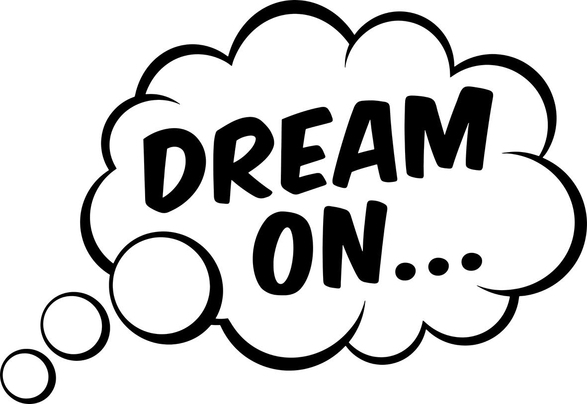

-

JOB - LORE
Written, performed and produced by Sami Suova
Artwork by Ben Sifel
Released by Dream On 2024.
Dream2
Here’s to another chance
I’ve got nowhere else to go
This is how it begins
Once again
”Lore" means traditional knowledge, and the learning passed on in this song may be that we are essentially repetition. But repetition both receives and transforms, so the only thing inevitably returning is divergence. What is eternally returning is not the same, but the different.

THE EMBASSY - E-NUMBERS
Written and performed by The Embassy
Production and mix by Isak Eldh & The Embassy
Artwork by Klas Barbrosson
Released by Dream On 2023.
Dream1
I don’t want the world to change. I just want to be against. Three cheers for us.
E-Numbers explores a nihilistic position. But the force and the beauty of the composition points further, to an overcoming of nihilism by affirmation of creative power. This affirmation is the truly transformative moment in which the habitual is opened up to the yet unknown, the past is opened to the future.
BUY VINYL LP HERE
Newsletter
info@dream-on.se
EVERY NEW SOUND, AM I DREAMING